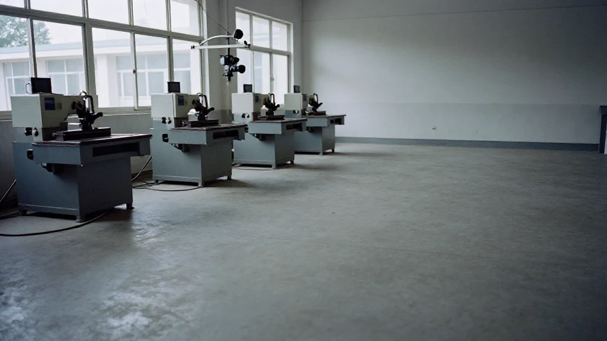
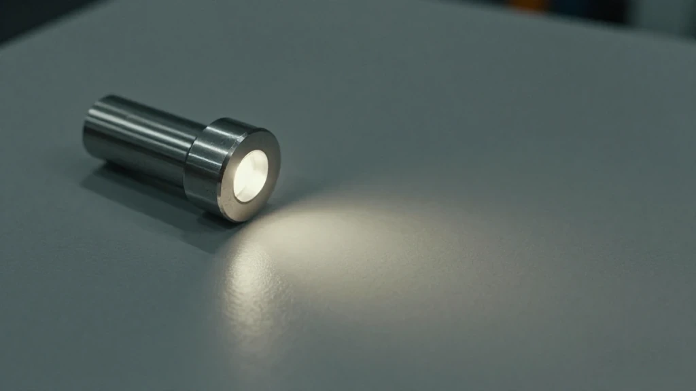
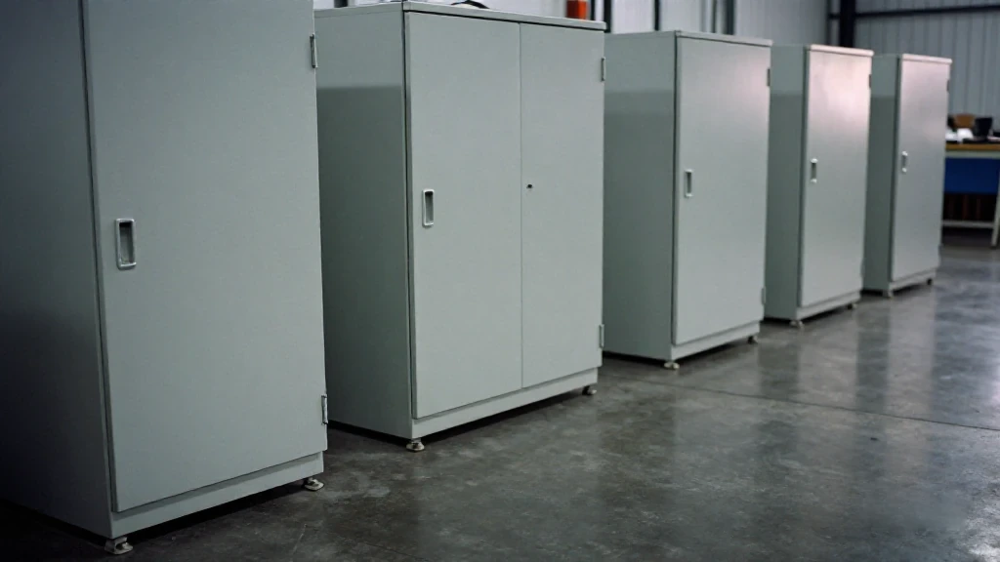
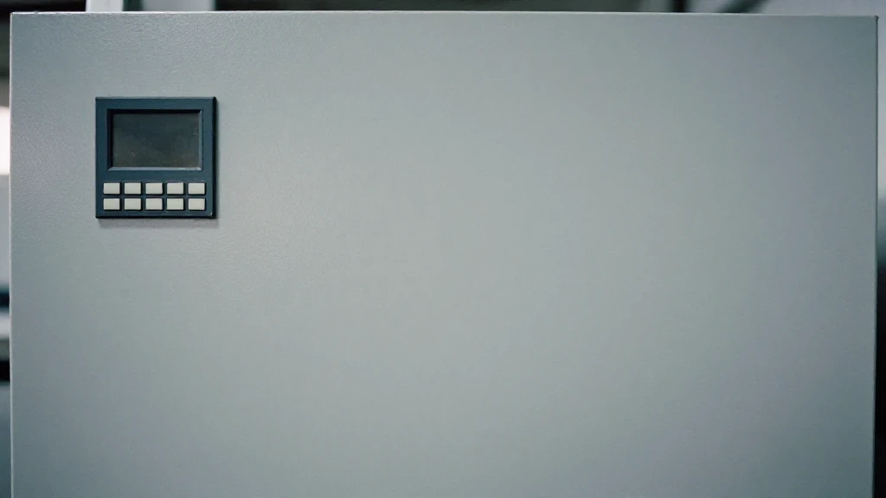
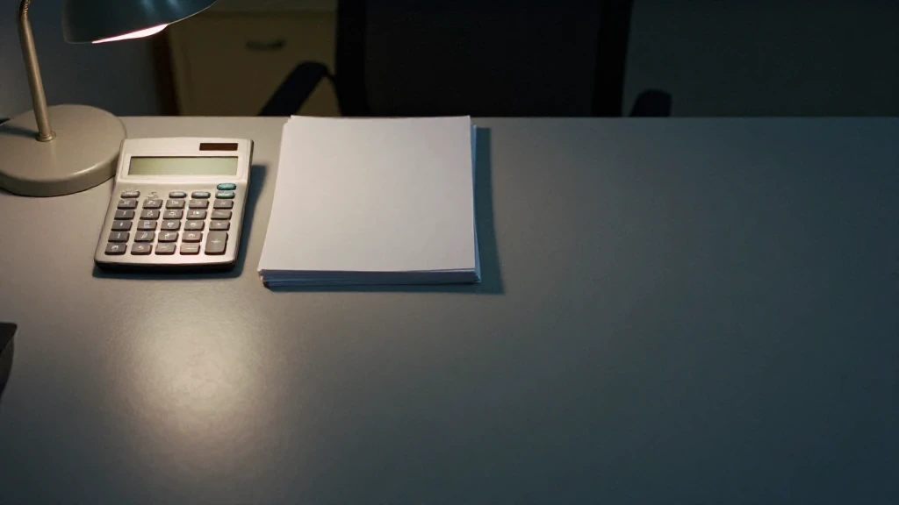

圖片由 AI輔助創作（Z-Image-Turbo）Image by AI (Z-Image-Turbo)
【鄭哥點評】
10 月 20 日，工信部喺發布會上講新一代智能製造，講咗一句關鍵嘅話：有關政策措施正在研究起草。係起草，唔係出台。我先把呢句擺喺最前，因為呢幾日好多轉載都寫成「政策已發」。
發布會上仲講咗：9 月全國先進製造業大會確立嘅新一代智能製造主攻方向，正進入政策落地階段；工信部會加快推動人工智能同製造業深度融合。
兩句併埋一齊讀，意思係：方向定咗，措施仲喺寫。冇一條規矩已經生效，冇一個期限，亦冇一個「唔裝就出局」嘅門檻。我唔想有讀者睇完之後，以為政府已經落咗令。
發布會講咗啲乜，同埋未講嘅係乜
圖片由 AI輔助創作（Z-Image-Turbo）Image by AI (Z-Image-Turbo)
發布會同時擺咗三層數字出嚟，我照抄：
| 層級 | 數量 |
|---|---|
| 基礎級智能工廠 | 5.6 萬餘家 |
| 先進級以上智能工廠 | 唔到 1 萬家 |
| 領航級智能工廠 | 15 家 |
再加一組：國產算力同大模型，已經喺鋼鐵、汽車、醫藥等 20 個行業，形成 1000 多個應用場景。
呢三層數字擺埋一齊睇，係一個金字塔：基礎級 5.6 萬餘家，塔身好厚；先進級以上唔到 1 萬家，塔腰即刻收窄；領航級 15 家，係針尖。呢個係現狀描述。現狀描述嘅用處，係話你知自己企喺邊一層，唔係話你知幾時要交卷。
真正令我坐低寫呢篇嘅，唔係政策，係另一組數字。
意願同掏錢，隔住 70 個百分點
圖片由 AI輔助創作（Z-Image-Turbo）Image by AI (Z-Image-Turbo)
信通院對 6000 餘家中小企業做過調查：50.2% 已經喺生產經營中應用 AI 技術；26.7% 計劃兩年內引入；83% 表示願意為 AI 付費。但 2026 年一季度，實際產生 AI 相關支出嘅規上工業企業，只有約 10%。
83% 同 10% 之間，隔住 70 幾個百分點。呢個落差，就係中小企業轉型嘅真實斷面。
我做生意咁多年，學到一條：問「你願唔願意」同問「你掏唔掏錢」，係兩條完全唔同嘅問題。第一條問嘅係態度，第二條問嘅係現金流。中間隔住嘅，唔係覺悟，係三道坎。
三道坎：算得清、付得起、回得快
圖片由 AI輔助創作（Z-Image-Turbo）Image by AI (Z-Image-Turbo)
第一道，算得清。老闆要嘅係具體投入產出：幾多錢落去，幾多個月返嚟。唔係「良率提升幾個百分點」呢種籠統描述。描述得越籠統，我越覺得寫嗰個人冇落過車間。
第二道，付得起。定制化改造動輒百萬元。對利潤率喺個位數徘徊嘅工廠，呢個數字等於押上一年利潤。押一年利潤去買一個未驗證嘅回報，唔叫進取，叫賭。
第三道，回得快。回本周期超過十二個月，多數老闆嘅選擇係再等等。等唔係唔想，係計唔過數。
三道坎裡面，第三道最硬。前兩道係計數，計完有答案；第三道係信心，你要喺未見到結果之前，先信個數係真嘅。
兩個樣本：五萬元，同唔夠一百萬

圖片由 AI輔助創作（Z-Image-Turbo）Image by AI (Z-Image-Turbo)
但係有人已經行過。兩個樣本，規模差十幾倍，投入差二十倍，兩條路都通。
東莞一間三十人五金廠，用 5 萬元方案。工業相機加免費算法平台做圖像質檢；激光位移傳感器做關鍵尺寸檢測；再用大模型工具做生產數據分析。結果：兩個月之內，良品率由 92% 升到 98%，客戶投訴跌 70%，兩個月回本。
華東一間五百人機械加工廠，投入不足一百萬元。做三個場景：AI 視覺質檢、智能排產、設備預測性維護。結果：次品率由 8% 降到 2.3%，排產效率升 35%，非計劃停機跌 40%，六個多月回本。
兩個廠嘅共通點，唔係有錢，係切口細。冇一個係由「全廠智能化」開始，兩個都係由一道工序、一個工位開始，做到帳算得埋，再加第二個。
門檻正在降低

圖片由 AI輔助創作（Z-Image-Turbo）Image by AI (Z-Image-Turbo)
黑湖科技嘅基礎版數字工單系統，年費 10,800 元。
河北移動嘅「中訓邊推」模式，單套部署成本 5 萬元左右。
台州路橋由政府搭公共 AI 底座，算力成本比企業自建降低 95%，智能體應用費 2 至 3 萬元。
對年產值幾千萬嘅工廠，呢個量級嘅起步投入，已經落入「老闆敢拍板」嘅區間。唔需要開董事會，唔需要等下一輪融資，係一筆自己簽得嘅錢。
決策起點：三個具體傷口

圖片由 AI輔助創作（Z-Image-Turbo）Image by AI (Z-Image-Turbo)
華東嗰間機械加工廠，決策起點唔係「我們要數字化轉型」，係三個具體傷口：8% 嘅綜合次品率、82% 嘅訂單準交率、每年約 600 小時嘅非計劃停機。
三樣都直接對應現金流出。所以每一筆投入嘅回本帳，都可以喺事前算到月度。呢個就係「算得清」嘅具體樣貌：唔係一個指標，係一張按月嘅現金流表。
切口選在顯性痛點上，投入規模控制在企業現金流能夠承受嘅單批次範圍內，回報周期壓到十二個月以內。呢三句，我認為比任何一份轉型路線圖都實用。
鄭哥點評

圖片由 AI輔助創作（Z-Image-Turbo）Image by AI (Z-Image-Turbo)
「唔會轉」，仍然係三道坎裡最難繞過嘅一道。
74% 嘅企業話數字化人才不足，複合型人才嘅總體缺口喺 2500 萬至 3000 萬區間。既懂工藝又懂 AI 嘅人極度稀缺；數據散喺紙質台賬同唔同系統裡面，模型嚟到都無從下手。
所以我把呢件事，翻成三句對中小製造企業有用嘅講法。
一、唔好想住一上嚟就做全廠 AI 改造。先讓一個工位、一道工序嘅帳算得過來，先贏一個可以複製嘅樣板。
二、最值得優先切入嘅係裝備端。直接決定良品率同交付穩定性嘅環節，投入遠低於全廠系統重構。
三、政府搭台正在降低門檻。公共 AI 底座、補貼政策、信貸鬆動，令「付得起」呢道題變簡單。
梯度培育嘅階梯，唔會要求所有企業爬到頂端，但底層嘅台階正在變成入場券。對於嵌在配套體系裡面嘅中小製造企業，被需要，係比賺錢更前置嘅生存條件。
資料來源：今日頭條，作者樊鴻傑（北京工商大學統計學博士研究生），2026年10月20日。文中政策內容為工信部喺 10 月 20 日發布會上所述，新一代智能製造有關政策措施仍在研究起草階段、未出台；信通院調查數據、兩個廠嘅案例同各項成本數字，均為原文所引，本文只作轉述同點評。
圖片由 AI輔助創作（Z-Image-Turbo）Image by AI (Z-Image-Turbo)
[Zheng Ge's Take]
On 20 October the Ministry of Industry and Information Technology spoke at a press conference about a new generation of intelligent manufacturing, and said one thing that matters: the policy measures concerned are being studied and drafted. Drafted, not issued. I am putting that sentence first because plenty of the reposting this week has read it as a policy already in force.
The press conference also said that the main direction for a new generation of intelligent manufacturing, set at September's national advanced manufacturing conference, is now entering the policy-implementation stage, and that the ministry will speed up the deep integration of artificial intelligence and manufacturing.
Put the two together and the meaning is this: the direction is settled, the measures are still being written. No rule is in force, there is no deadline, and there is no threshold at which a factory that does not install AI is out. I would rather no reader finishes this piece thinking an order has been handed down.
What the press conference said, and what it did not say
圖片由 AI輔助創作（Z-Image-Turbo）Image by AI (Z-Image-Turbo)
The same press conference put three tiers of numbers on the table. I copy them as given:
| Tier | Number |
|---|---|
| Basic-level smart factories | more than 56,000 |
| Advanced-level and above | under 10,000 |
| Leading-level smart factories | 15 |
And one more set: domestic compute and domestic large models have already produced more than a thousand application scenarios across twenty industries, steel, automobiles and pharmaceuticals among them.
Taken together those three tiers are a pyramid. Basic level, more than 56,000: the body is thick. Advanced level and above, under 10,000: the waist narrows at once. Leading level, 15: a needle point. This is a description of where things stand. A description of where things stand tells you which tier you are on. It does not tell you when the paper is due.
What actually made me sit down and write this was not the policy. It was another set of numbers.
Wanting it and paying for it are seventy points apart
圖片由 AI輔助創作（Z-Image-Turbo）Image by AI (Z-Image-Turbo)
CAICT, the China Academy of Information and Communications Technology, surveyed more than 6,000 small and medium-sized enterprises: 50.2 per cent already use AI somewhere in their operations; 26.7 per cent plan to bring it in within two years; 83 per cent say they are willing to pay for it. But in the first quarter of 2026, only about 10 per cent of industrial enterprises above the designated size actually booked any AI-related spending.
Between 83 per cent and 10 per cent there are seventy-odd points. That gap is the real cross-section of SME transformation.
One thing I have learned in business: "are you willing" and "will you pay" are two completely different questions. The first asks about attitude. The second asks about cash flow. What sits between them is not a lack of conviction. It is three thresholds.
Three thresholds: can you count it, can you afford it, does it come back fast
圖片由 AI輔助創作（Z-Image-Turbo）Image by AI (Z-Image-Turbo)
The first: can you count it. The owner wants a concrete input and output — how much money goes in, how many months until it comes back. Not a vague line about yield rising by some number of points. The vaguer the description, the more certain I am that whoever wrote it has never stood on the shop floor.
The second: can you afford it. Customised retooling runs to a million yuan and more. For a factory whose margin is scraping along in single digits, that number means pledging a year of profit. Pledging a year of profit for an unproven return is not ambition. It is a bet.
The third: does it come back fast. If the payback period runs past twelve months, most owners choose to wait a little longer. Waiting is not unwillingness. The arithmetic does not clear.
Of the three, the third is the hardest. The first two are sums: work them out and you have an answer. The third is confidence: you have to believe the number is real before you have seen the result.
Two samples: fifty thousand yuan, and just under a million
圖片由 AI輔助創作（Z-Image-Turbo）Image by AI (Z-Image-Turbo)
But people have already walked this road. Two samples: ten times apart in size, twenty times apart in spend, and both routes work.
A thirty-person hardware factory in Dongguan, on a 50,000-yuan plan. An industrial camera plus a free algorithm platform for visual inspection; a laser displacement sensor for critical dimensions; a large-model tool for production data analysis. The result: within two months, first-pass yield rose from 92 per cent to 98 per cent, customer complaints fell 70 per cent, and the spend paid for itself in two months.
A five-hundred-person machining plant in eastern China, on just under a million yuan. Three scenarios: AI visual inspection, intelligent scheduling, predictive maintenance. The result: the defect rate fell from 8 per cent to 2.3 per cent, scheduling efficiency rose 35 per cent, unplanned downtime fell 40 per cent, and the spend paid for itself in a little over six months.
What the two have in common is not money. It is a small incision. Neither began with "smart factory, whole plant". Both began with one process, one workstation, until the arithmetic cleared — and only then added the second.
The threshold is falling
圖片由 AI輔助創作（Z-Image-Turbo）Image by AI (Z-Image-Turbo)
Black Lake Technology, the basic edition of its digital work-order system: 10,800 yuan a year.
China Mobile Hebei's "train as you roll out" model: a single deployment costs around 50,000 yuan.
Taizhou's Luqiao district, where the local government built a shared AI foundation: compute costs 95 per cent lower than a company building its own, and agent applications at 20,000 to 30,000 yuan.
For a factory turning over tens of millions a year, starting money at that scale has dropped into the range where the owner will sign it himself. No board meeting, no waiting for the next funding round — money he can commit on his own signature.
Where the decision starts: three specific wounds
圖片由 AI輔助創作（Z-Image-Turbo）Image by AI (Z-Image-Turbo)
That machining plant in eastern China did not start from "we must go digital". It started from three specific wounds: a blended defect rate of 8 per cent, an on-time delivery rate of 82 per cent, and about 600 hours of unplanned downtime a year.
All three map directly onto cash leaving the business. That is why the payback on every purchase could be worked out in advance, month by month. This is what "can you count it" looks like in practice: not an indicator, a cash-flow table by month.
Put the incision on the visible pain. Keep the spend inside the batch size the company's cash flow can carry. Compress the payback period to within twelve months. Those three lines are worth more than any transformation roadmap I have seen.
Zheng Ge's Take
圖片由 AI輔助創作（Z-Image-Turbo）Image by AI (Z-Image-Turbo)
"We don't know how to do it" is still the hardest of the three thresholds to get around.
74 per cent of enterprises say they are short of digital talent, and the overall shortage of people who can span both sides is put at 25 to 30 million. Someone who understands the process and understands AI is extremely rare; the data sits scattered across paper ledgers and incompatible systems, and a model that arrives has nowhere to start.
So I turn all of this into three lines that are useful to a small or medium manufacturer.
One: do not try to rebuild the whole plant with AI on day one. Get the arithmetic to clear at one workstation, on one process first. Win a template you can copy.
Two: the equipment end is where to cut in first. It is the part that directly decides yield and delivery reliability, and it costs far less than rebuilding every system in the plant.
Three: government platforms are lowering the threshold. Shared AI foundations, subsidy schemes and looser credit are making the "can you afford it" question easier.
The ladder of tiered cultivation will not ask every company to climb to the top, but the bottom rungs are turning into the ticket in. For a small manufacturer wedged inside somebody else's supply chain, being needed comes before making money.
Source: 今日頭條 (Toutiao), by 樊鴻傑, a doctoral candidate in statistics at Beijing Technology and Business University, 20 October 2026. The policy material quoted here is what the Ministry of Industry and Information Technology said at its press conference on 20 October; the measures on a new generation of intelligent manufacturing are still being studied and drafted and have not been issued. The CAICT survey figures, the two factory cases and all cost figures are as cited in that article. They are restated and commented on here, not independently verified for this piece.